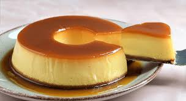

A sobremesa que conquistou o mundo!

O pudim é uma das sobremesas mais amadas do Brasil. Com sua textura cremosa e calda de caramelo, conquista paladares há gerações. Aqui você encontra tudo sobre essa delícia!
Os primeiros registros do pudim datam da Roma Antiga, onde era uma mistura de carne, vegetais e trigo. A versão doce como conhecemos surgiu na Idade Média.
O pudim chegou ao Brasil durante o período colonial, trazido pelos portugueses, e rapidamente se adaptou aos ingredientes locais, como o leite condensado.
Hoje, o pudim é considerado um patrimônio da culinária brasileira, presente em todas as regiões do país e em praticamente todas as ocasiões especiais.
de história desde as primeiras receitas